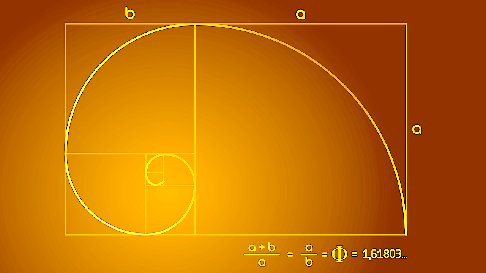
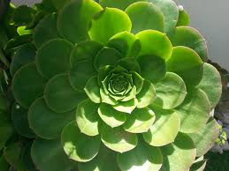
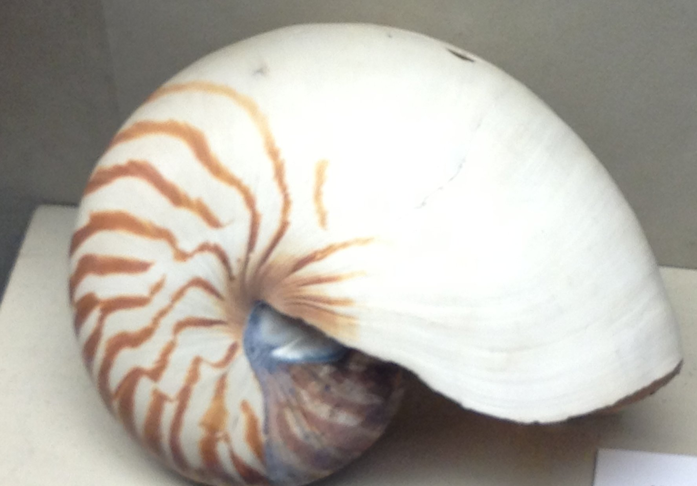
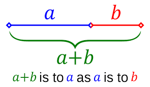
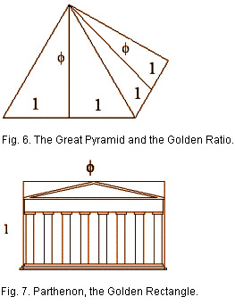

Look For It Everywhere

1) Fibonacci Golden Ratio Spiral
The golden ratio describes geometry in which squares whose edges are sized using numbers from the
Fibonacci sequence. The ratio of the sum of the larger square and the next smaller square to
edge
of the larger square is equal to the sum of the edge of the larger square and the edge of the
smaller square. If A is the length of the edge of the larger square and B is the length of the
smaller square, (A + B)/A = A/B ~ 1.618.

2) Greek Letter PHI
The Greek letter phi written in digits from the golden ratio. PHI is an irrational number like PI
with a value of 1.618...

3) Golden Ratio Seen in Plants
The golden ratio can be see in the way that leaves grow in plants.

4) Da Vinci Vitruvian Man
he ratio of the radius of the circle to the length of the square measuring the height of the man
is
the golden mean. Da Vinci was relating Man to Nature.

5) Pearl Nautilus
The pearl nautilus shell is an example of how we see the Fibonacci spiral in nature.

6) Golden Ratio in a Line
The golden ratio can be expressed linearly.

7) Golden Ratio Use in Architecture
The Great Pyramid and the Parthenon both use PHI in their architectural design